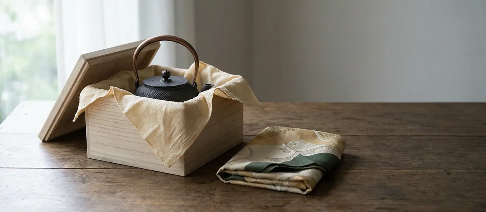

ガイド ／ 贈り物
南部鉄瓶を贈り物に

南部鉄瓶は、手入れすれば何十年も使え、壊れても工房で直してもらえる贈り物です。ただし選び方を間違えると、相手のキッチンで使えません。しかも厄介なことに、予算をかけるほど失敗しやすいという逆転があります。まずそこから片付けます。
01なぜ贈り物に選ばれるのか
南部鉄瓶が記念の贈り物に向くのは、①手入れすれば何十年も使え、壊れても工房で修理してもらえる実用品であること ②工房が公式に意味を語る模様があること ③国の伝統的工芸品としての格——という点からです。消えものではなく、長く手元に残る贈り物として選ばれています。
02いちばん多い失敗 ── 熱源。しかも「高いほど危ない」
贈り物で最大の失敗は相手のキッチンで使えないことです。及源鋳造（OIGEN）は、伝統製法である焼型鉄瓶について「底面だけを強力な磁力で発熱するIH調理器には向いていません」と明記しています。焼型は肉厚を薄く作れるのが持ち味で、IHが求める厚い底とは逆方向だからです。
つまり「奮発して伝統工芸品らしい一台を」と選ぶほど、IHのご家庭では使えない可能性が上がる。相手のキッチンがIHなら、価格帯よりも先にIH対応の表示を確認してください。見分け方はIH対応の選び方にまとめています。
03サイズと重さ ── 相手によって最適解が変わる
次に多い失敗が大きすぎることです。及富は容量選びのガイドで、贈り物について具体的な注意を書いています。
ご年配の方が使う場合は、容量の大きすぎる鉄瓶は避けた方がよいでしょう。ギフトを検討される場合に気をつけたいポイントです。
理由は重さです。同社によれば容量0.4Lのモデルで約1kg、1.8Lでは約2.35kg。ここに湯の重さが加わります。1.2Lの湯を入れれば総重量は3kg前後。毎日それを持ち上げて注げるかが現実的な基準になります。
及富が示す目安は、一人で使うなら0.4〜1.0L、家族で使うなら1.2〜1.8L（1.8Lなら6〜7人でも使える）。贈り物で迷ったら、0.9〜1.2L前後が扱いやすく、来客にも対応できる無難な範囲です。
04シーン別の選び方 ── 掲載データで裏を取る
贈答の記事は「結婚祝いには縁起のよい模様を」で終わりがちですが、実際に贈れるかどうかはそのシーンに合う鉄瓶が、実際にどれだけ流通しているかで決まります。ここでは一般的な目安に、本サイトが掲載している210銘柄の集計を突き合わせました（産地全体の統計ではありませんが、傾向の見当はつきます）。
| シーン | のし | 容量の目安 | 掲載件数 | うちIH対応 |
|---|---|---|---|---|
| 結婚祝い 出産・新築・入学祝い | 紅白結び切り 紅白蝶結び | 0.9〜1.2L | 65件 | 27件 |
| 還暦・長寿祝い | 紅白蝶結び | 0.5〜0.8L 軽さ優先 | 30件 | 20件 |
| 退職・記念 | 紅白蝶結び | 1.3L以上 作り手で選ぶなら | 104件 | 30件 |
| 海外の方へ | ── | 0.5〜0.8L 持ち帰り重視 | 30件 | 20件 |
※のしの3分類と使う場面の例示は及源鋳造（OIGEN）公式によります（「退職」は同社の例示にないため本サイトの判断です）。容量の目安は及富の記述と本サイトの容量分布によります。件数は本サイト掲載210銘柄のうち容量を確認できた202件の集計で、「IH対応」は工房公式でIH対応と確認できたものだけを数えています。
「相手のキッチンがIHか」で、候補はここまで変わる
同じ集計をIHの軸で見ると、大きい鉄瓶ほど、選べる中でIH対応が占める割合が下がっていくことが分かります。0.5〜0.8Lは30件中20件（3件に2件）、0.9〜1.2Lは65件中27件、1.3L以上になると104件中30件で、3割を切ります。
贈り物では「せっかくだから大きめを」と考えがちですが、相手がIHのご家庭なら、0.5〜1.2Lの帯で探すほうが当たりを引きやすいということになります。この帯のIH対応は合わせて47件で、1.3L以上の30件より多く、母数に対する比率も高いからです。
ただし小さいほうにも限界があります。0.4L以下は掲載3件だけ。小ぶりを探すなら、0.5〜0.8Lの帯まで含めて見るのが現実的です。
IH対応の鉄瓶を見る › / 0.5〜0.8Lを見る › / 0.9〜1.2Lを見る ›
縁起の模様で選ぶなら、なおさら熱源が先
工房が公式に縁起の意味を語っているのは亀甲・瓢箪・菊・蜻蛉・松・梅の6つです（意味の中身は後述の「縁起のよい模様で選ぶ」にまとめました）。本サイトの模様カテゴリでは、このうち蜻蛉と松を菊のカテゴリに含めているため、亀甲・瓢箪・菊・梅の4カテゴリにあたります。掲載銘柄でこの4カテゴリに当たるのは34件、うちIH対応と確認できたのは9件です。
とくに厳しいのが亀甲です。掲載9件のうち、公式にIH対応と確認できたのは1件だけ。5件は公式の対応熱源欄にIHの記載がなく、残る3件は工房が熱源を公表していません。「長寿祝いだから亀甲を」と決めてから相手がIHだと知ると、候補がほぼ残らないということです。順番を逆にして、熱源で絞ってから模様を選んでください。
退職・記念に贈るなら
ゆっくり湯を沸かす時間を贈る、という意味づけができる機会です。この場面だけは、毎日の扱いやすさより作り手がはっきりしていることを優先してよいと思います。伝統工芸士の銘が入るもの、砂鉄を原料にしたもの、作家名で選べるものは、おおむね5万円以上の価格帯に集まります。
表で退職・記念だけ容量を1.3L以上にしているのは、そのためです。掲載データを価格で切ると、5万円以上の115件のうち87件が1.3L以上でした。作り手の名前で選べる一台は、実際には大ぶりに寄っているということです。裏を返せば相応に重いので、毎日使ってもらうつもりなら、贈る前に相手の使い方を思い浮かべてください。
ただし冒頭で見たとおり、価格が上がるほどIHでは使いにくくなります。飾って眺める時間も含めて贈るのか、毎日使ってもらうのかを先に決めておくと、選ぶ基準がぶれません。
5万円以上の鉄瓶を見る › / 伝統的工芸品と伝統証紙とは ›
05のし・ラッピング ── 工房ごとの実際の対応
ギフト対応は工房によってかなり違います。料金まで公開しているのは及源鋳造（OIGEN）です。
- ギフトラッピング──1商品につき¥330（税込）
- のし──無料。3種から選択でき、のしへの名入れも可能
- メッセージカード──1枚¥220（税込）。80文字以内、91×55mm
同社が示すのしの使い分けは、そのまま贈答マナーの参考になります。
| のしの種類 | 使う場面（公式の例示） |
|---|---|
| 紅白蝶結び | 何度繰り返しても良いお祝いごとやお礼など。誕生祝い、長寿祝い、出産祝い、新築祝い、入学・卒業祝い |
| 紅白結び切り | 婚礼関係のお祝いや一度きりであってほしいお祝い。結婚祝い、結婚内祝い、引き出物 |
| 黒白結び切り | ご葬儀や法要などの弔事。御霊前、香典、御供 |
岩鋳は「熨斗・ギフト包装をご希望のお客様は、通信欄へ詳細をご記入下さい」として対応しています。さらに贈り物として気の利いた運用も明記しています。
ご依頼主様とお届け先が異なる場合は、商品を包装して発送いたします。また、納品書等は同包せずに、後程ご依頼主様へ郵送いたします。
相手に金額が分からないよう配慮されるということです。直送で贈るときに安心できるポイントです。
なお及富・薫山工房・鈴木盛久工房・御釜屋については、公式サイト上でギフト対応の記載を見つけられませんでした。ないとは限らないので、必要なら購入前に直接問い合わせるのが確実です。
06名入れはできる？
ここは正直にお伝えします。鉄瓶本体への名入れ（彫刻）を公式に案内している工房は、今回調べた範囲では見つかりませんでした。
紛らわしいのですが、OIGENの「名入れ」はのしへの名入れのことで、鉄瓶本体への加工ではありません。
一方、正規取扱店では対応がある場合があります。たとえば日本工芸堂は、木箱入り商品に限り木箱への名入れ（20文字まで・7〜14日）を別途見積もりで受け付けています。記念品として名前を入れたい場合は、本体ではなく箱に入れるという選択肢になります。
桐箱についても同様で、工房公式のECで「桐箱入り」と明記された鉄瓶は確認できませんでした。桐箱や木箱は、主に正規取扱店側の付加サービスとして提供されています。
07海外の方へ贈るとき
近年は海外の方への土産としても選ばれますが、注意点が3つあります。
① 主要工房は海外発送していない
OIGENは「海外への配送は承っておりません」、岩鋳も「当サイトでは、海外への直接発送は行っておりません」と明記しています。一方御釜屋はEMSでの海外発送に対応しており、地帯別の概算送料（アジア¥6,000〜7,000、北米・中近東¥8,200〜9,600、ヨーロッパ¥9,400〜11,000、南米・アフリカ¥16,000〜19,000／保険料別）を公開しています。
② 電圧・IH規格が違う
日本のIH対応表示は日本の規格が前提です。現地のIHで同じように使える保証はありません。直火（ガス）で使えるモデルのほうが、渡した後のトラブルは少なくなります。
③ とにかく重い
1.8Lの鉄瓶で本体約2.35kg。手荷物で持ち帰るには相応の負担です。0.4〜0.6L前後の小さめを選ぶのが現実的です。
あわせて、手入れが必要な道具であることを伝えるメモを添えると親切です。使ったら湯を捨てて乾かす、この2つだけでも伝われば錆びずに使ってもらえます。
08縁起のよい模様で選ぶ
模様に意味を持たせて選ぶこともできます。工房が公式に意味を説明しているのは、次の6つです。
- 亀甲──長寿・健康・魔除け（岩鋳・OIGEN）／長寿祝いに
- 瓢箪──六つ揃えば無病息災（及富）／健康を願う場面に
- 菊──おめでたさの象徴（OIGEN）
- 蜻蛉──「勝虫」で勝負事の縁起（及富）／昇進・栄転に
- 松──長寿・不老不死（及富）／還暦・長寿祝いに
- 梅──春への兆し（及富）／新生活の門出に
引用の原文と出典は「模様の意味と由来」にまとめています。世の中で語られる縁起の由来には出典のはっきりしないものも多いため、本サイトでは工房が実際に述べている範囲にとどめています。
模様の意味と由来をくわしく読む › / 模様から鉄瓶を探す ›
09贈る前の最終チェック
- 相手の熱源──IHなら「IH対応」の表示があるものだけに絞る。ここを外すと使ってもらえません
- 重さ──本体重量＋湯の重さ。ご年配の方へは特に控えめに
- 容量──一人なら0.4〜1.0L、家族なら1.2〜1.8L。迷ったら0.9〜1.2L前後
- のし・包装──工房によって対応が違います。直送なら金額が見えない配慮があるかも確認を
- 手入れの案内──「使ったら湯を捨てて乾かす」だけでも添えると、長く使ってもらえます
最後にもうひとつ。鉄瓶は直せる道具です。工房がはっきりしているものを選んでおけば、何年か先に錆びても、相手は修理を頼めます。贈り物としては、そこまで含めて価値があります。
10ふるさと納税という選択肢
自分用にも贈答用にも、産地である奥州市・滝沢市のふるさと納税返礼品という選び方もあります。寄附額と取扱ポータルを一覧にしています。
11よくある質問
贈り物で失敗しないために、まず何を確認すべきですか？
結婚祝いに南部鉄瓶は喜ばれますか？
年配の方に贈るときの注意はありますか？
のしやラッピングは対応してもらえますか？
鉄瓶に名入れはできますか？
海外の方へのお土産に向きますか？
贈り物の予算の目安は？
この記事に関連する銘柄
記事のシーン別の表に対応する容量帯から選びました。価格・容量・熱源は各工房の公式サイトまたは正規取扱店で確認した掲載時点の情報です。おすすめ順ではありません。
PR ／ アフィリエイトリンクを含みます。
模様から探す › / 容量から探す › / 熱源から探す › / 予算から探す ›
出典（外部リンク）
本記事が引用した一次ソースのうち、該当ページを特定できたものです。リンク先は別タブで開きます（2026年8月31日に到達を確認）。
出典：及源鋳造 OIGEN（ギフトサービス・配送方法・南部鉄瓶について）、岩鋳（配送・お支払いについて）、及富（容量から選ぶ南部鉄瓶の選び方）、御釜屋（配送ポリシー）、日本工芸堂の各公式情報。2026年8月28日確認。模様の意味は本サイト掲載の一次ソースに基づきます。シーン別の件数は本サイト掲載銘柄の集計（2026年8月31日時点）で、工房・流通の全体を示すものではありません。ギフト対応の内容・料金は変更される場合があるため、ご購入前に各ショップでご確認ください。